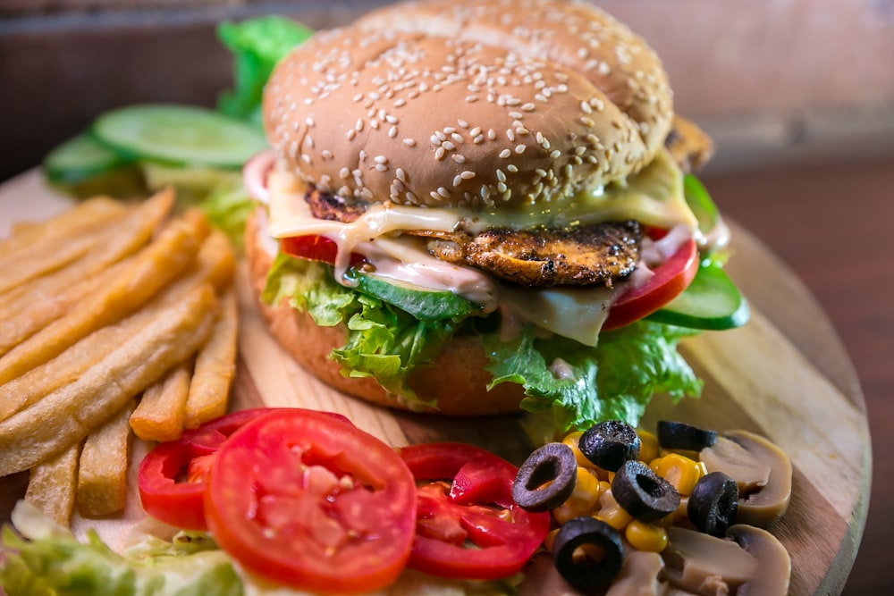

+
🏠
🔍
😋
danielk0121
v-260316-0802
① 찍기
② 맛 표현
③ 맛 뱉기
④ 위치
📸
터치하여 음식을 촬영하세요
🖼️
🔄

📸 미식 포인트를 확인했어요!
맛 뱉기 🗣️
느껴지는 맛을 툭툭 골라주세요! 점수는 AI가 알아서 매겨줘요
👅 기본 미각
🍯
단맛
🧂
짠맛
🍋
신맛
🍄
감칠맛
☕
쓴맛
🦷 식감
🌶️
매운맛
🔥
바삭함
🦑
쫄깃함
☁️
부드러움
🍯
꾸덕함
🥓
기름짐
🌿
신선도
👃 풍미/향
🧀
치즈/우유
🧈
버터향
🔥
불맛
🌿
향신료
🥜
고소함
🥩
육향
🌊
해물향
🍓
과일/상큼
기록 완료! ✨
📍 위치 기록
이 맛집의 위치를 지도에 저장할까요?
📍
위치 확인 중...
📍
위치를 불러오는 중...
건너뛰기
위치 저장 ✨